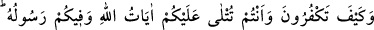
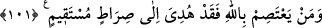

îmanınızdan sonra sizi yeniden inkârcılığa sevkederler.
“Ey inananlar, kitap verilenlerden bir guruba” taifeye “uyarsanız…” Allah
Teâlâ’nın “bir gurubu” özel olarak zikretmesinin sebebi, kitap ehlinden, inananların da
bulunmasıdır.
“Îmânınızdan sonra sizi tekrar kâfirliğe döndürürler.”
İkrime diyor ki: “Bu âyet yahûdî Şâs b. Kays hakkında nâzil olmuştur. Şâs b. Kays,
Evs ve Hazrecliler’den oluşan bir kalabalığın bulunduğu bir grup görünce, onların bu
şekilde birbirlerine ısınmış olmaları kendisini fenâ halde kızdırdı. Hemen gidip bir
genç ayarlayarak Buâs harbi ile alâkalı şiirleri okumak üzere onların yanına gönderdi.
Buâs, Evs ve Hazrec’in savaştığı ve Evs’in galip geldiği büyük bir gündü. Bu şiirler
üzerine İslâm’ın tarihe gömdüğü kabilecilik ruhu tekrar hortladı. Ve tartışmaya
başladılar. Durum hemen Hz. Peygamber’e haber verilince aralarını bulmak üzere
evinden çıkıp oraya geldi.”
101. Size Allah’ın âyetleri okunurken, üstelik Allah Rasûlü de aranızda iken nasıl
inkâra saparsınız? Her kim Allah’a bağlanırsa kesinlikle doğru yola iletilmiştir.
“Allah’ın âyetleri” yani Kur’ân size okunmakta ve Allah’ın elçisi aranızda iken;
“Nasıl inkâr edersiniz?” Bu ifade, inkâr ve taaccüb ifade eder.
Mûcize olan Kur’ân, Hz. Peygamber’in lisânı ile taptaze olarak size okunup dururken;
Hz. Peygamber de gözlerinizin önünde size vaaz eder, sizi uyarır ve şüphelerinizi
giderirken, nasıl olup da bu inkâr semtinize hâlâ uğrayabiliyor? Bütün bu şeyler apaçık
gözlerinizin önünde iken îmandan çıkıp küfre girmeniz gerçekten acâib ve akıl
almayacak bir durumdur.
Kim Allah’a yani Allah’ın Hz. Peygamber’in lisânı ile gelen âyetlerde açıkladığı hak
dînine sarılıp yapışırsa; -Allah’ın dînî “sebîlullah” diye anlatılan tevhid ve İslâm
dinidir- muhakkak ki o, doğru yola iletilmiştir.
Allah Teâlâ, hidâyetten bahsederken, onlar için hidâyet kesinleşmiş gibi haber
vermektedir. Fakat burada bir beklenti mânası olduğu açıktır. Çünkü Allah’a sarılan,
hidâyeti beklemektedir. Nitekim cömert birine yönelen de ondan ihsan beklemektedir.
“Doğru yol” diye ifade edilen “müstakîm”; matlûba ulaştıran yol demektir. Onlar
işte yola muvaffak kılınıp irşad edildiler.
Bu hitap, zâhiri itibariyle kitap ehline yönelik olsa da, bâtını itibariyle, dünya için
dinlerini satan ve bildikleri gerçeklere göre hareket etmeyen kötü bilginlere yöneliktir.
Bu kötü bilginler; dünyaya meyletmeme, verâ ve takvâya sarılma, nefse hevâyı
yasaklama, bâkîyi fâniye tercih, halktan yüz çevirip Hakk’a yönelme, maksûda nâil